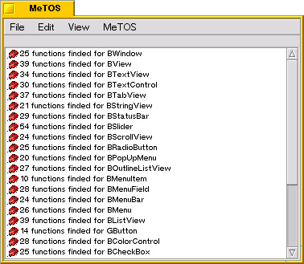
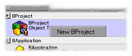
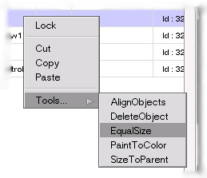
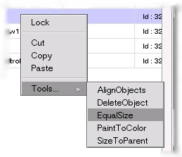

How to use MeTOS...
When the application started, you can see 6 windows :
- the MeTOS window
- the AddOns window
- the Objects window
- the Properties window
- the Tools window
- the Undo window
The MeTOS window is use to acces to menu and to see information about using MeTOS,
debbugging or simple informations

The Addons window group the object addons you can use to create GUI Be object.
You find here, BApplication, BWindow and more.
To create an object, just Drag and Drop an addon into the Objects window,
or use the right mouse button on the addon to display the pop-up-menu and use New with the name of addon.

The Objects window let see the current project with all objects created.

In this window you can see some informations :
- the Icon and name of the object
- the lock state of the object (locking is used to protect an object)
- the derived value (derived would say the code generation create a header and cpp file)
- the ID of the object
- the number of created objects
- the number of objects into the garbage list (deleted objects)
You can see the current selected object in the list.
You can select an object by simple click on it into this list.
In this window you can acces to an Object pop-up-menu (you can access to this pop-up on the object himself)
to display this menu simple click with right mouse button on the object.
The Propeties window let you change the selected objects properties.
that's include :
- alls properties you can edit or just see (some internal properties are hidden)
- selection of functions you want generate into c++ code
- additional code you want to add for the object (added into generated c++ code)
- dependencies of this object to library or other files
- informations about the object
To edit a properties, just click on it and change the value, the editing depend on the properties,
you can use Edit or RadioButton or ...
The Tools window let you use some tool to :
- Align some objects with oser
- Delete objects
- Give Equal size for selected objects
- Paint the object with current tool color (for View)
- Resize object into size of parent
You can access on tool special effect with using right mouse click on the tool.
You can acces to the tool by the object menu too.
 

The Undos window can be use to cancel actions (delete, propertie change and more...)

To use the undo, select an item and use the Restore option of the pop-up-menu displayed by right click on the item
top
- CKJ - Vincent Cedric
Copyright (c) 2000-2004.